Series & DataFrame: The Core 1D & 2D Building Blocks
Deep dive into Pandas fundamental labeled data structures: Single-column Series vs multi-feature DataFrames,
.loc and .iloc precision indexing, alignment mathematics, dynamic column transformations, and exploratory visualizations.
1. A Relatable Introduction: The College Dean's Record Challenge
Imagine kijiye aap ek engineering college ke examination cell mein software developer hain. Naya academic semester complete ho chuka hai, aur College Dean aapse kehte hain:
"Humaare paas 6 alag-alag synthetic student records hain jisme Student Name, Roll Number, Department, Marks, Attendance Percentage, aur Daily Study Hours recorded hain. Mujhe in records par 4 specific analytical answers turant chahiye!"
Dean Sahab ke 4 Practical Sawal:
- Sawal 1: Agar hume poore batch ke sirf Marks score ko alag se store karna ho aur average calculate karna ho, toh best data container kya hoga?
- Sawal 2: Agar hume har student ke complete tabular profile (Name + Roll + Dept + Marks + Attendance) ko ek sath retain karna ho, toh structure kaisa dikhega?
- Sawal 3: Agar hume kisi ek specific student (jaise Roll No 102 'Diya Patel') ki poori details nikaalni ho, toh bina poori list search kiye direct lookup kaise karein?
- Sawal 4: Computer Science (CS) aur Information Technology (IT) departments ke average marks ko aapas mein compare kaise karein?
In chaaron sawalon ka answer Pandas ke do fundamental data structures mein chhipa hai:
• Pandas Series (1D Labeled Array): Sawal 1 ka answer — jab data sirf ek feature ya ek column ho (jaise sirf Marks ya sirf Attendance).
• Pandas DataFrame (2D Labeled Table): Sawal 2, 3 aur 4 ka answer — jab multiple Series ek sath milkar ek complete tabular spreadsheet create karti hain!
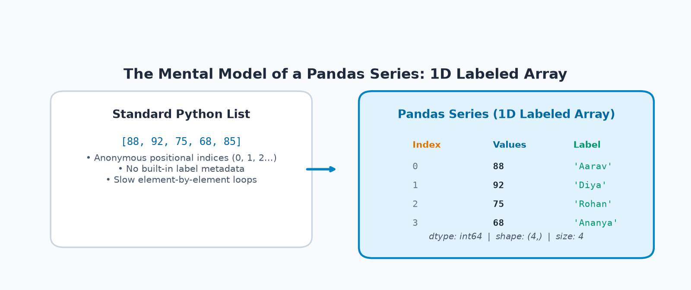
Learning Objectives for Topic 2:
- Series & DataFrame ki deep understanding: 1D labeled column vs 2D tabular matrix ka exact mental model build karna.
- Construction Flexibility: Lists, Dictionaries, NumPy ndarrays, aur list of dictionaries se structures banana.
- Precision Indexing:
.loc[](label-based) aur.iloc[](integer position-based) ke difference ko samajhna taaki kabhi confusion na ho. - DataFrame Inspection Checklist:
shape,dtypes,info(),describe()se unknown dataset ko 30 seconds mein diagnose karna. - Dynamic Feature Engineering: New calculated columns add karna, existing columns update karna, aur unneeded columns ko cleanly
drop()karna. - Automatic Index Alignment: Jab do Series ke index match nahi karte toh Pandas
NaNintroduce kyun karta hai aur iska calculation par kya asar hota hai. - Data Visualization: Series aur DataFrame se directly Matplotlib bar charts aur trendlines render karna.
2. Understanding Series Deeply: The 1D Labeled Array
Pandas ka sabse basic aur atomic data structure hota hai pd.Series. Simple shabdon mein:
"Ek Series ek 1-Dimensional homogeneous labeled array hoti hai jisme har element ke sath ek explicit business label (Index) juda hota hai."
Python list sirf values ka ek sequence hoti hai: [88, 92, 75, 68, 85]. List ko pata nahi hota ki 88 kiska score hai aur 92 kiska score hai.
Agar aapko kisi student ka score chahiye, toh aapko alag se loop chalana padega ya doosri list maintain karni padegi.
Pandas Series is problem ko permanently solve karti hai: Isme har value ke sath ek semantic label permanently attach ho jata hai (jaise 'Diya': 92),
jisse aap marks['Diya'] likhkar instant value retrieve kar sakte hain!
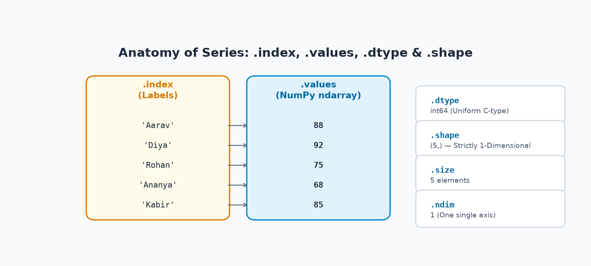
Essential Properties of a Pandas Series:
.index— Series ke labels ka Index object return karta hai (jaiseIndex(['Aarav', 'Diya', ...])yaRangeIndex(0, 5))..valuesya.to_numpy()— Underlying data ka raw NumPy contiguous C-array buffer return karta hai..dtype— Series ke sabhi elements ka homogeneous data type batata hai (jaiseint64,float64,object)..shape— Dimension tuple return karta hai. Kyunki Series 1D hoti hai, iska shape hamesha(N,)hota hai..size— Series mein total elements ki sankhya return karta hai (Integer)..ndim— Series ke dimensions ki sankhya batata hai. Series ke case mein yeh hamesha1hota hai.
Example 1: Student Marks Series with Default Integer Index
Jab hum index specify nahi karte, toh Pandas automatically 0-based RangeIndex assign kar deta hai:
import pandas as pd
# 1. Python list se student marks ki Series create karna
marks_list = [88, 92, 75, 68, 85]
s_marks = pd.Series(marks_list, name="Student_Marks")
print("--- COMPLETE SERIES ---")
print(s_marks)
print("
--- SERIES PROPERTIES ---")
print("Index Object :", s_marks.index)
print("Values Array :", s_marks.values)
print("Data Type :", s_marks.dtype)
print("Shape :", s_marks.shape)
print("Total Size :", s_marks.size)
print("Dimensions :", s_marks.ndim)Line-by-Line Code & Output Explanation:
pd.Series(marks_list, name="Student_Marks"): List ke 5 integers ko 1D Series mein convert kiya aur column ko descriptive titleStudent_Marksdiya.- Output mein left side par
0, 1, 2, 3, 4default index positions hain aur right side par student ke marks hain. s_marks.values: Under-the-hood contiguous NumPy ndarray[88 92 75 68 85]return karta hai, jo proof hai ki Pandas NumPy ke upar build hua hai!s_marks.shape:(5,)return karta hai — ek element ka tuple jo 1D structure ko confirm karta hai.
Example 2: Weekly Expenses Series with Custom Day Labels
Ab integers ki jagah semantic calendar day labels ('Mon' se 'Sun') attach karte hain:
import pandas as pd
# Weekly expenses with customized day labels
days = ['Mon', 'Tue', 'Wed', 'Thu', 'Fri', 'Sat', 'Sun']
spending = [300, 450, 200, 350, 700, 850, 500]
s_expenses = pd.Series(spending, index=days, name="Weekly_Expenses_INR")
print("--- WEEKLY EXPENSES SERIES ---")
print(s_expenses)
# Direct semantic label lookup
print(f"
Monday Spending : ₹{s_expenses['Mon']}")
print(f"Saturday Spending : ₹{s_expenses['Sat']}")
print(f"Total Spent Week : ₹{s_expenses.sum()}")
print(f"Daily Mean Spend : ₹{s_expenses.mean():.2f}")Example 3: Creating a Series from a Python Dictionary
Jab aap Python dictionary ko Series mein pass karte hain, toh dictionary ke keys automatically Index labels ban jaate hain aur dictionary ke values Series ke data elements ban jaate hain:
import pandas as pd
# Dictionary of product prices in INR
prices_dict = {
'Laptop': 55000,
'Mouse': 650,
'Keyboard': 2200,
'Monitor': 14000,
'Headphones': 2800
}
s_prices = pd.Series(prices_dict, name="Catalog_Prices_INR")
print(s_prices)
print("
Direct Lookup Laptop :", s_prices['Laptop'])
print("Most Expensive Item :", s_prices.idxmax(), "with ₹", s_prices.max())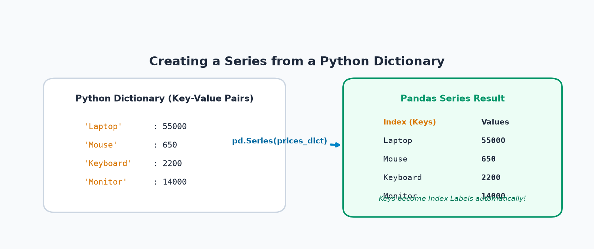
Example 4: Daily Temperature Series
Meteorological observation days ke sath temperature trends ko monitor karna:
import pandas as pd
temps = {'Day 1': 32.5, 'Day 2': 34.0, 'Day 3': 31.8, 'Day 4': 35.2, 'Day 5': 33.1}
s_temps = pd.Series(temps, name="Recorded_Temp_C")
print(s_temps)
print(f"
Peak Heat Observed : {s_temps.max()}°C on {s_temps.idxmax()}")
print(f"Lowest Temperature : {s_temps.min()}°C on {s_temps.idxmin()}")3. Series Indexing and Selection: .loc vs .iloc
Series se values nikaalne ke do fundamental tareeqe hote hain:
1. Label-based access (.loc[]): Index ke exact business label (jaise 'Diya' ya 'Laptop') se data access karna.
2. Position-based access (.iloc[]): Zero-based integer index position (jaise 0, 1, 2...) se data access karna.
Yeh difference har data science interview aur production bug ka main cause hota hai:
• .loc['Start':'Stop'] (Label Slice): Stop label ko INCLUDE karta hai! Yani 'Diya':'Ananya' mein Ananya bhi result mein aayegi.
• .iloc[start:stop] (Position Slice): Standard Python list rule follow karta hai — stop position ko EXCLUDE karta hai! Yani 1:4 mein indices 1, 2, 3 aayenge, index 4 nahi aayega!
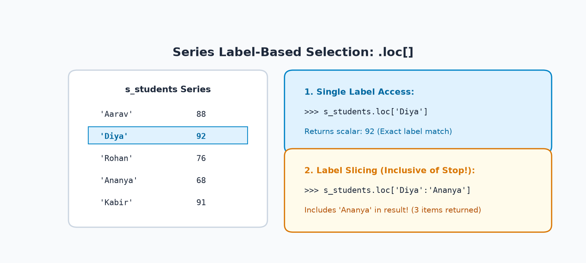
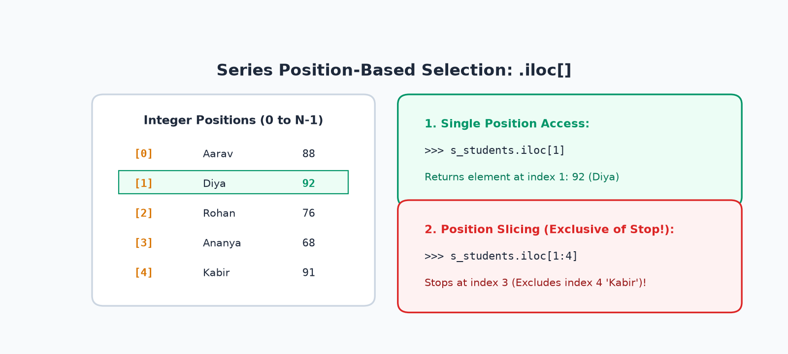
Example 1: Precision Indexing on Student Marks Series
import pandas as pd
s_students = pd.Series(
[88, 92, 76, 68, 91],
index=['Aarav', 'Diya', 'Rohan', 'Ananya', 'Kabir']
)
# 1. Single Element Access
print("By Label (.loc) :", s_students.loc['Diya'])
print("By Position (.iloc):", s_students.iloc[1])
# 2. Selecting Multiple Elements via List of Keys
print("
Multiple Labels (.loc):")
print(s_students.loc[['Aarav', 'Kabir']])
# 3. Slicing Comparison
print("
Label Slice ('Diya':'Ananya') — INCLUSIVE of stop:")
print(s_students.loc['Diya':'Ananya'])
print("
Position Slice (1:4) — EXCLUSIVE of stop index 4:")
print(s_students.iloc[1:4])Example 2: Daily Sales / Temperature Slicing
import pandas as pd
sales = pd.Series(
[12000, 14500, 18000, 16200, 25000],
index=['Mon', 'Tue', 'Wed', 'Thu', 'Fri']
)
# Mid-week sales slice
midweek_loc = sales.loc['Tue':'Thu']
print("Midweek Sales (Tue to Thu inclusive):")
print(midweek_loc)
print("Midweek Total: ₹", midweek_loc.sum())
Agar aap aisa label access karenge jo index mein exist nahi karta (jaise s_students.loc['Zoya']), toh Python turant KeyError: 'Zoya' raise karega.
Isi tarah agar aap position index boundary se bahar pass karenge (jaise s_students.iloc[10] on 5 elements), toh IndexError: single positional indexer is out-of-bounds raise hoga.
Safe programming ke liye hamesha pehle check karein: if 'Zoya' in s_students: ...
4. Understanding DataFrame Deeply: The 2D Tabular Grid
Jab hum multiple Pandas Series ko horizontally align kar dete hain jisme sabhi Series ek common row Index share karti hain, toh use hum DataFrame kehte hain!
Simple shabdon mein: "DataFrame ek two-dimensional, size-mutable, tabular data structure hai jisme labeled axes (Rows and Columns) hoti hain aur har column ka alag data type ho sakta hai."
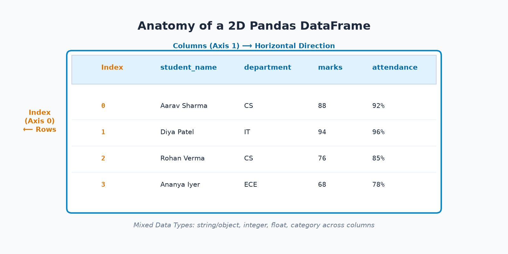
Core Concepts of a DataFrame:
- Two Dimensional (
ndim = 2): Isme data rows (Axis 0) aur columns (Axis 1) ke rectangular grid mein rehta hai. - Heterogeneous Column Types: Excel spreadsheet ki tarah, pehla column
student_name(string/object) ho sakta hai, doosramarks(integer), aur teesraattendance(float). - Shared Index: Sabhi columns ek hi row index share karte hain, jisse complete student profile ek coherent record ke roop mein operate karti hai.
Example 1: College Student Dataset (6 Synthetic Records)
import pandas as pd
student_records = {
'student_name': ['Aarav Sharma', 'Diya Patel', 'Rohan Verma', 'Ananya Iyer', 'Kabir Singh', 'Meera Nair'],
'roll_no' : [101, 102, 103, 104, 105, 106],
'department' : ['CS', 'IT', 'CS', 'ECE', 'IT', 'CS'],
'marks' : [88, 94, 76, 68, 91, 84],
'attendance' : [92, 96, 85, 78, 90, 88],
'study_hours' : [6.5, 8.0, 5.0, 3.5, 7.5, 6.0]
}
df_students = pd.DataFrame(student_records)
print("--- 6-RECORD STUDENT DATAFRAME ---")
print(df_students)
print(f"
Shape: {df_students.shape} (Rows: {df_students.shape[0]}, Cols: {df_students.shape[1]})")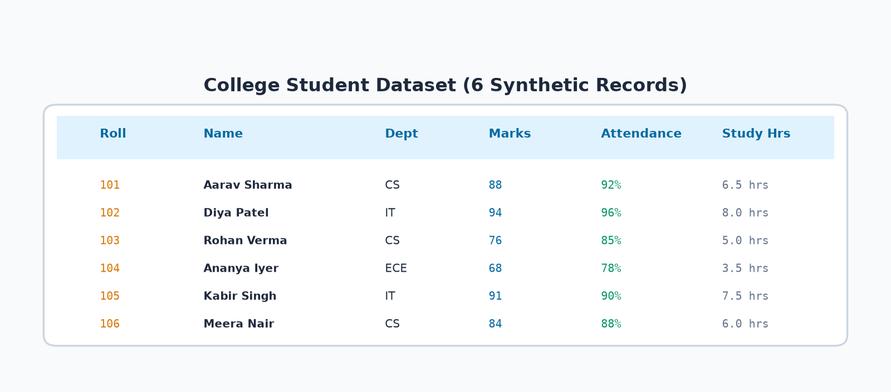
Example 2: E-Commerce Catalog Dataset
import pandas as pd
ecommerce_records = {
'product' : ['Wireless Mouse', 'Mechanical Keyboard', 'USB-C Cable', 'LED Monitor', 'Laptop Stand'],
'category' : ['Peripherals', 'Peripherals', 'Accessories', 'Displays', 'Accessories'],
'price' : [599, 2499, 299, 11499, 1299],
'quantity_sold': [45, 18, 120, 12, 35],
'rating' : [4.3, 4.7, 4.1, 4.6, 4.4]
}
df_ecommerce = pd.DataFrame(ecommerce_records)
print(df_ecommerce)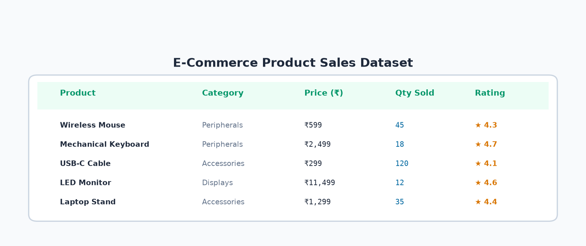
Example 3: Creating DataFrame from Dictionary of Lists
Jab aap Dictionary of lists pass karte hain, toh har list ki length strictly barabar (compatible) honi chahiye. Agar ek column mein 5 elements hain aur doosre mein 4, toh Python ValueError: All arrays must be of the same length throw karega:
import pandas as pd
# Har list ki length exactly 3 elements hai (Compatible)
valid_dict = {
'item': ['Pen', 'Notebook', 'Eraser'],
'price': [20, 80, 10],
'stock': [100, 50, 200]
}
df_stationery = pd.DataFrame(valid_dict)
print(df_stationery)Example 4: Creating DataFrame from List of Dictionaries
Web APIs, MongoDB, aur JSON files se aane wala data aksar list of dictionaries (records format) hota hai. Har dictionary ek single row ban jaati hai aur keys columns ban jaate hain:
import pandas as pd
json_records = [
{'product': 'Wireless Mouse', 'price': 599, 'stock': 150},
{'product': 'Mechanical Keyboard', 'price': 2499, 'stock': 40},
{'product': 'USB-C Cable', 'price': 299, 'stock': 300}
]
df_from_json = pd.DataFrame(json_records)
print(df_from_json)5. Inspecting a DataFrame: Methods vs Properties Checklist
Jab bhi aapke paas koi naya dataset aata hai, toh sabse pehla kaam hota hai uski structural inspection karna.
Pandas mein inspection operations do categories mein aate hain:
• Properties / Attributes (No Parentheses ()): Jaise df.shape, df.columns, df.dtypes, df.size. Yeh DataFrame ke pre-calculated metadata hote hain.
• Methods (Require Parentheses ()): Jaise df.head(), df.info(), df.describe(). Yeh dynamic computations perform karte hain aur parameters accept kar sakte hain.
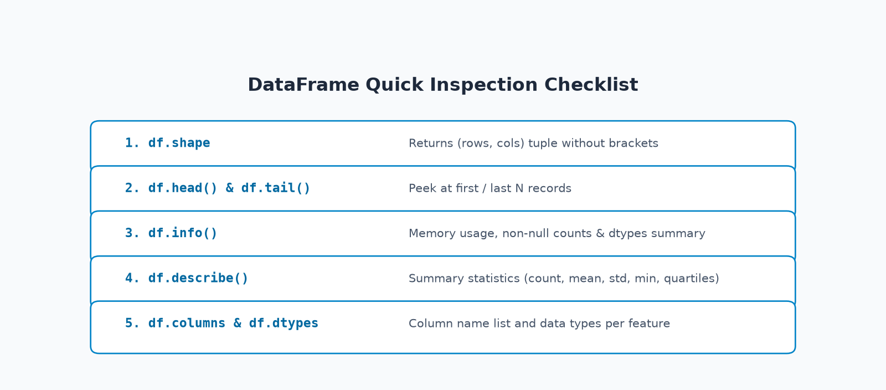
Comprehensive Analysis of the 11 Core Inspection Operations:
| Operation | Type | What It Does & When Useful | Return Type |
|---|---|---|---|
df.shape |
Property | Total rows aur columns ka (N, D) tuple return karta hai. Instant size verify karne ke liye best. |
tuple (int, int) |
df.head(n=5) |
Method | Pehle n records dikhata hai. Column names aur sample values peeking ke liye ideal. |
DataFrame |
df.tail(n=5) |
Method | Aakhiri n records dikhata hai. Dataset bottom corrupted toh nahi hai check karne ke liye. |
DataFrame |
df.columns |
Property | Sabhi column headers ka Index object return karta hai. Typos pakadne ke liye essential. |
Index (list-like) |
df.index |
Property | Row identifiers ka Index object (RangeIndex ya custom labels) return karta hai. | Index |
df.dtypes |
Property | Har column ka individual storage type (int64, float64, object) return karta hai. | Series |
df.ndim |
Property | Dimensionality count batata hai. DataFrame ke liye hamesha 2 hota hai. |
int |
df.size |
Property | Total cells ki sankhya (Rows × Columns) return karta hai. | int |
df.values |
Property | Raw 2D contiguous NumPy array return karta hai. | numpy.ndarray |
df.info() |
Method | Complete diagnostic summary: row count, non-null counts per column, dtypes, aur RAM memory usage. | None (prints to stdout) |
df.describe() |
Method | Numerical columns ke 8 statistical benchmarks (count, mean, std, min, 25%, 50%, 75%, max) generate karta hai. | DataFrame |
Executable Inspection Suite on College Student Dataset
import pandas as pd
df_students = pd.DataFrame({
'student_name': ['Aarav Sharma', 'Diya Patel', 'Rohan Verma', 'Ananya Iyer', 'Kabir Singh', 'Meera Nair'],
'roll_no' : [101, 102, 103, 104, 105, 106],
'department' : ['CS', 'IT', 'CS', 'ECE', 'IT', 'CS'],
'marks' : [88, 94, 76, 68, 91, 84],
'attendance' : [92, 96, 85, 78, 90, 88],
'study_hours' : [6.5, 8.0, 5.0, 3.5, 7.5, 6.0]
})
print("1. Shape (Rows, Cols) :", df_students.shape)
print("2. Total Cells (Size) :", df_students.size)
print("3. Column Names List :", list(df_students.columns))
print("
4. Peek First 3 Records (head):")
print(df_students.head(3))
print("
5. Data Types per Column:")
print(df_students.dtypes)
print("
6. Numerical Summary Statistics (describe):")
print(df_students.describe().round(2))
By default, df.describe() sirf numeric columns (int64, float64) ko analyze karta hai. Agar aapko text columns (jaise student_name, department) ka frequency count aur unique values dekhna ho, toh df.describe(include='all') use karein!
6. Selecting Columns and Rows: Series vs DataFrame Returns
Data Science workflow ka 70% time data slicing aur selection mein jaata hai. Aaiye column aur row extraction ke exact syntax aur unke return types ko master karte hain:
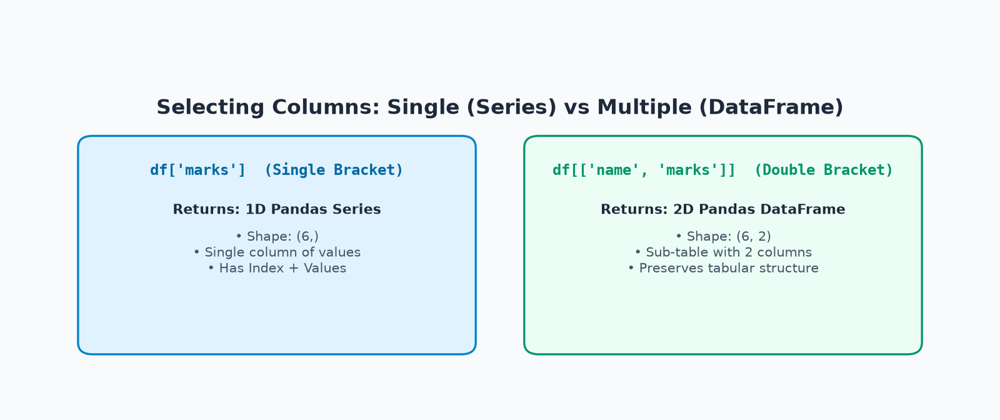
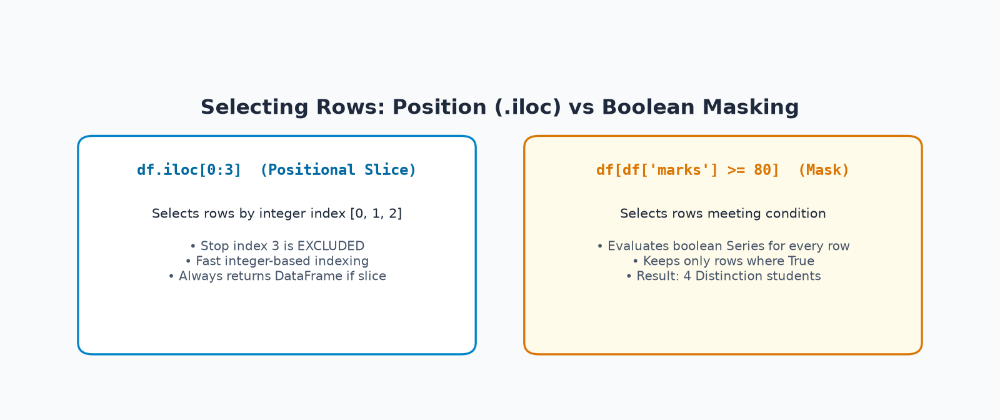
Example 1: Column Selection (Single vs Multiple)
import pandas as pd
# 1. Single Column Selection -> Returns Series
s_marks = df_students['marks']
print("Single Bracket df['marks'] Type :", type(s_marks))
print("Shape of Single Bracket :", s_marks.shape)
# 2. Multiple Column Selection -> Returns DataFrame
df_subset = df_students[['student_name', 'marks']]
print("
Double Bracket df[['name', 'marks']] Type:", type(df_subset))
print("Shape of Double Bracket :", df_subset.shape)
print("
Subset Contents:")
print(df_subset.head(3))Example 2: Precision Row Selection & Single Cell Access
import pandas as pd
# 1. First 3 rows by position using .iloc
first_three = df_students.iloc[0:3]
print("--- FIRST 3 ROWS (.iloc[0:3]) ---")
print(first_three)
# 2. Accessing a Single Specific Cell
# Label-based: Row 1, Column 'marks'
cell_loc = df_students.loc[1, 'marks']
# Positional: Row index 1, Column index 3
cell_iloc = df_students.iloc[1, 3]
print(f"
Single Cell Marks (Diya Patel): .loc={cell_loc}, .iloc={cell_iloc}")
# 3. Filtering Rows with Boolean Condition
high_achievers = df_students[df_students['marks'] >= 85]
print(f"
Students with Marks >= 85 (Total {len(high_achievers)}):")
print(high_achievers[['student_name', 'department', 'marks']])7. Adding, Updating, and Removing Columns
Real data analysis mein raw data directly consumption ke ready nahi hota. Hume naye features calculate karne padte hain (Feature Engineering), existing values ko standardize karna padta hai, aur unnecessary columns ko drop karna padta hai:
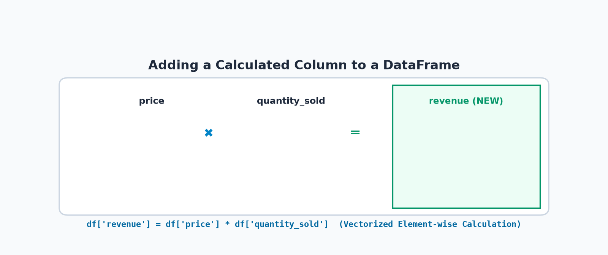
Example 1: Student Percentage & Result Status
Chaliye student DataFrame mein ek calculated percentage column aur conditional status column add karte hain:
import pandas as pd
import numpy as np
df = df_students.copy()
# 1. Adding a new calculated column
df['percentage'] = (df['marks'] / 100.0) * 100.0
# 2. Adding a conditional status column using np.where
df['status'] = np.where(df['marks'] >= 80, 'Distinction', 'Pass')
print("--- DATAFRAME WITH NEW FEATURES ---")
print(df[['student_name', 'marks', 'percentage', 'status']])
# 3. Cleanly dropping the redundant percentage column
df_clean = df.drop(columns=['percentage'])
print("
Columns after drop:", list(df_clean.columns))Example 2: E-Commerce Catalog Revenue & Discount Update
import pandas as pd
df_ecom = df_ecommerce.copy()
# 1. Calculated column: revenue = price * quantity_sold
df_ecom['revenue'] = df_ecom['price'] * df_ecom['quantity_sold']
# 2. Updating existing column with festive discount (10% off)
df_ecom['discounted_price'] = df_ecom['price'] * 0.90
print(df_ecom[['product', 'price', 'discounted_price', 'revenue']])
print(f"
Total Catalog Gross Revenue: ₹{df_ecom['revenue'].sum():,}")
By default, df.drop(columns=['col']) original DataFrame ko modify nahi karta! Yeh ek naya DataFrame copy return karta hai.
Agar aap use kisi variable mein save nahi karenge (jaise df = df.drop(...)), toh column drop nahi hoga!
Alternative option: df.drop(columns=['col'], inplace=True) use karein, lekin modern Pandas guidelines mein reassignment (df = df.drop(...)) ko safer mana jaata hai.
8. Series versus DataFrame: The Definitive Structural Comparison
Beginners aksar confuse hote hain ki kab Series use karein aur kab DataFrame. Yeh structured table dono ke har aspect ko clearly differentiate karti hai:
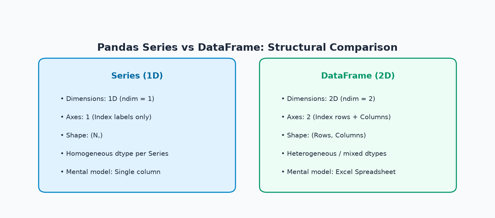
| Feature / Aspect | Pandas Series | Pandas DataFrame |
|---|---|---|
| Dimensionality | 1-Dimensional (ndim = 1) |
2-Dimensional (ndim = 2) |
| Mental Model | Single labeled spreadsheet column | Complete multi-column spreadsheet table |
| Axes Count | 1 Axis (Axis 0: Row Index labels) | 2 Axes (Axis 0: Rows, Axis 1: Columns) |
| Shape Format | Single-element tuple: (N,) |
Two-element tuple: (Rows, Columns) |
| Data Homogeneity | Strictly homogeneous (all values share 1 dtype) | Heterogeneous (columns can have mixed dtypes) |
| Single Column Access | N/A (already a single column) | df['marks'] returns a Series |
| Double Bracket Access | N/A | df[['marks']] returns a 1-column DataFrame |
| Typical Construction | Lists, Dictionaries, 1D NumPy arrays | Dict of lists, list of dicts, 2D arrays, CSV/Excel |
| Common Use Case | Calculating stats on 1 feature (mean, sum) | Complex queries, multi-feature analysis, ML models |
Example: Proving the Difference Between Single vs Double Brackets
Notice kijiye ki kaise ek extra square bracket add karne se result Series se DataFrame ban jaata hai:
import pandas as pd
df_sample = pd.DataFrame({
'name': ['Aarav', 'Diya', 'Rohan'],
'marks': [88, 94, 76]
})
s_one = df_sample['marks'] # Single bracket -> Series
df_two = df_sample[['marks']] # Double brackets -> DataFrame
print("df['marks'] : Type=", type(s_one), "Shape=", s_one.shape, "Ndim=", s_one.ndim)
print("df[['marks']] : Type=", type(df_two), "Shape=", df_two.shape, "Ndim=", df_two.ndim)9. Understanding Indexes and Automatic Data Alignment
Pandas ki sabse powerful superpower hai Automatic Index Alignment. Jab aap do Series ko add, subtract, ya multiply karte hain, toh Pandas positional order dekhne ke bajaye matching index labels ke aadhar par calculation karta hai!
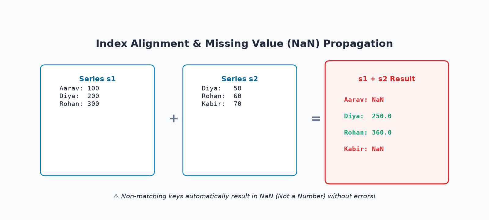
Example 1: Setting and Resetting a Custom Business Identifier Index
By default DataFrame RangeIndex(0, 1, 2...) use karta hai. Lekin agar aap chahein toh kisi business identifier (jaise roll_no) ko index bana sakte hain:
import pandas as pd
df = df_students.copy()
# 1. Roll number ko index banana
df_indexed = df.set_index('roll_no')
print("--- DATAFRAME WITH ROLL_NO AS INDEX ---")
print(df_indexed.head(3))
# Direct business lookup by roll number 102
diya_profile = df_indexed.loc[102]
print(f"
Student with Roll 102: {diya_profile['student_name']} ({diya_profile['department']})")
# 2. Resetting index back to default 0-based integer
df_restored = df_indexed.reset_index()
print("
Restored Columns:", list(df_restored.columns))Example 2: Automatic Alignment & Missing Value (NaN) Behavior
Chaliye do alag-alag shifts ke employee overtime allowances ko add karke dekhte hain jahan kuch employees common hain aur kuch alag hain:
import pandas as pd
shift_morning = pd.Series([100, 200, 300], index=['Aarav', 'Diya', 'Rohan'])
shift_evening = pd.Series([50, 60, 70], index=['Diya', 'Rohan', 'Kabir'])
total_allowance = shift_morning + shift_evening
print("--- COMBINED OVERTIME ALLOWANCE ---")
print(total_allowance)
Kyunki shift_evening mein Aarav nahi tha, aur shift_morning mein Kabir nahi tha!
Jab Pandas kisi value ke sath missing value ko add karta hai, toh result unknown yaani NaN (Not a Number) ban jaata hai.
Agar aap chahein ki missing keys ko 0 maana jaaye, toh shift_morning.add(shift_evening, fill_value=0) use karein!
10. Practical Filtering & Batch Calculations
Real data analysis mein filter conditions lagana sabse common operation hota hai.
Pandas mein filter karte waqt boolean operators & (AND) aur | (OR) use hote hain, aur har individual condition ko parentheses () mein wrap karna mandatory hota hai!
Example 1: Multi-Condition Filtering on Student Records
Chaliye un students ko filter karte hain jinke Marks 80 ya usse zyada hon AUR Attendance 90% ya usse zyada ho:
import pandas as pd
# Combined condition: (marks >= 80) & (attendance >= 90)
# Note: Parentheses around each condition are MANDATORY!
merit_filter = (df_students['marks'] >= 80) & (df_students['attendance'] >= 90)
merit_students = df_students[merit_filter]
print("--- MERIT LIST STUDENTS (Marks >= 80 AND Attendance >= 90%) ---")
print(merit_students[['student_name', 'department', 'marks', 'attendance']])
print(f"
Overall Average Marks : {df_students['marks'].mean():.2f}")
print(f"Highest Score : {df_students['marks'].max()} (by {df_students.loc[df_students['marks'].idxmax(), 'student_name']})")
print(f"Lowest Score : {df_students['marks'].min()} (by {df_students.loc[df_students['marks'].idxmin(), 'student_name']})")Example 2: E-Commerce Product Revenue & Filtering
import pandas as pd
df_ecom = df_ecommerce.copy()
df_ecom['revenue'] = df_ecom['price'] * df_ecom['quantity_sold']
# Filtering high-performing products: rating >= 4.4 OR revenue >= 40000
high_performers = df_ecom[(df_ecom['rating'] >= 4.4) | (df_ecom['revenue'] >= 40000)]
print("--- HIGH PERFORMING PRODUCTS ---")
print(high_performers[['product', 'rating', 'revenue']])11. Visualizing Data with Pandas & Matplotlib
Data insights ko quickly communicate karne ke liye visuals se badhkar kuch nahi hota. Pandas Series aur DataFrame objects Matplotlib ke sath seamlessly integrate hote hain. Aaiye humare synthetic datasets par 4 actual charts generate karte hain:
Chart 1: Student Marks Bar Chart
Har student ke score ko bar chart mein visualize karna with 80-mark distinction benchmark line:
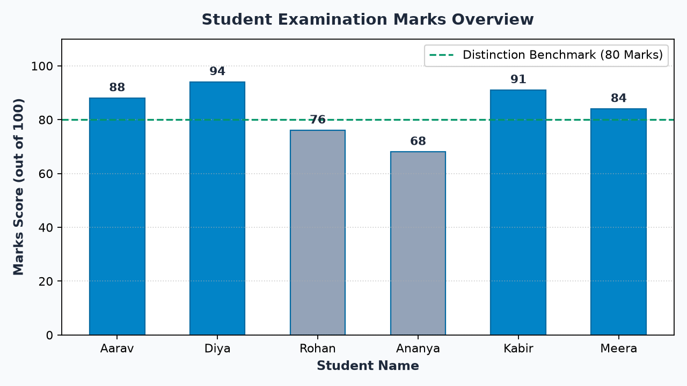
import matplotlib.pyplot as plt
students = ['Aarav', 'Diya', 'Rohan', 'Ananya', 'Kabir', 'Meera']
marks = [88, 94, 76, 68, 91, 84]
plt.figure(figsize=(8, 4.5), dpi=160)
colors = ['#0284c7' if m >= 80 else '#94a3b8' for m in marks]
plt.bar(students, marks, color=colors, width=0.55)
plt.axhline(80, color='#059669', linestyle='--', label='Distinction Benchmark (80)')
plt.ylabel("Marks Score")
plt.title("Student Examination Marks Overview")
plt.legend()
plt.show()Chart 2: Department-Average Marks Bar Chart
Departments (CS: 82.7, ECE: 68.0, IT: 92.5) ke performance ko compare karna:
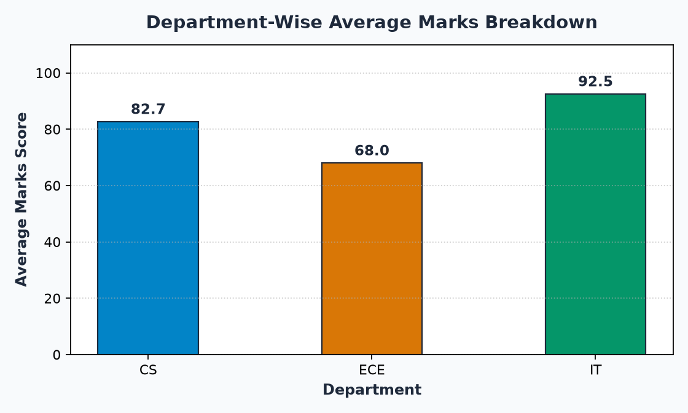
import matplotlib.pyplot as plt
depts = ['CS', 'ECE', 'IT']
avg_marks = [82.7, 68.0, 92.5]
plt.figure(figsize=(7, 4.2), dpi=160)
plt.bar(depts, avg_marks, color=['#0284c7', '#d97706', '#059669'], width=0.45)
plt.ylabel("Average Marks Score")
plt.title("Department-Wise Average Marks Breakdown")
plt.show()Chart 3: Daily Temperature Line Trendline
5-day temperature fluctuations ko line chart aur area fill se monitor karna:
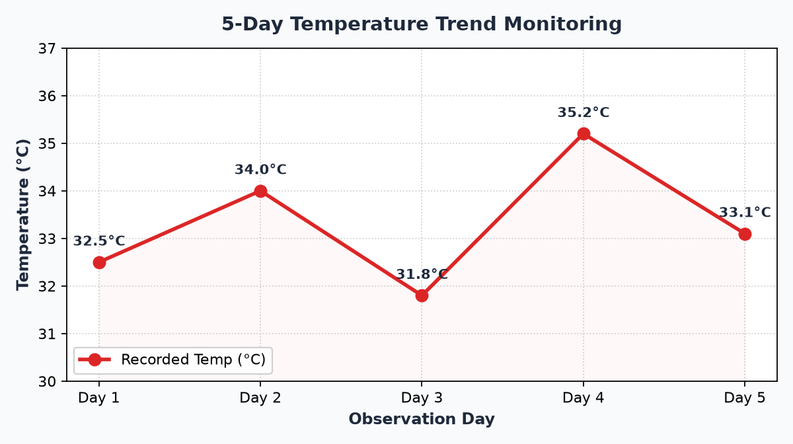
import matplotlib.pyplot as plt
days = ['Day 1', 'Day 2', 'Day 3', 'Day 4', 'Day 5']
temps = [32.5, 34.0, 31.8, 35.2, 33.1]
plt.figure(figsize=(7.5, 4.2), dpi=160)
plt.plot(days, temps, marker='o', color='#dc2626', linewidth=2.5)
plt.fill_between(days, temps, 30, color='#fef2f2', alpha=0.5)
plt.ylabel("Temperature (°C)")
plt.title("5-Day Temperature Trend Monitoring")
plt.show()Chart 4: E-Commerce Product Revenue Bar Chart
Horizontal bar chart se har product ke revenue contribution ko compare karna:
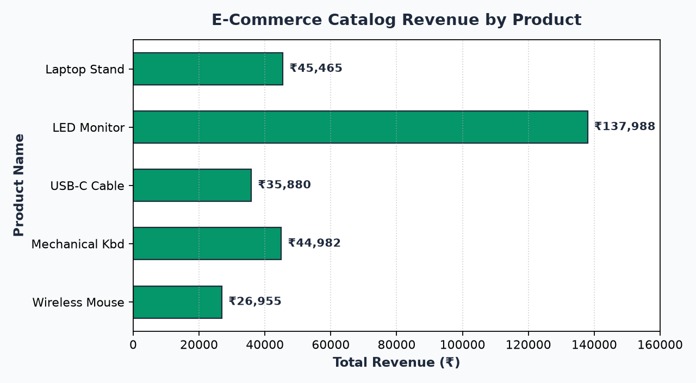
import matplotlib.pyplot as plt
products = ['Wireless Mouse', 'Mechanical Kbd', 'USB-C Cable', 'LED Monitor', 'Laptop Stand']
revenues = [26955, 44982, 35880, 137988, 45465]
plt.figure(figsize=(8, 4.4), dpi=160)
plt.barh(products, revenues, color='#059669', height=0.55)
plt.xlabel("Total Revenue (₹)")
plt.title("E-Commerce Catalog Revenue by Product")
plt.show()12. Case Study: College Performance Explorer
Chaliye is topic ke sabhi theoretical concepts (Series, DataFrame, inspection, selection, feature creation, filtering, aggregation, aur plotting) ko ek complete, runnable end-to-end 10-step case study mein bind karte hain:
import pandas as pd
import numpy as np
# ============================================================
# STEP 1: Create the Synthetic Student DataFrame
# ============================================================
records = {
'student_name': ['Aarav Sharma', 'Diya Patel', 'Rohan Verma', 'Ananya Iyer', 'Kabir Singh', 'Meera Nair'],
'roll_no' : [101, 102, 103, 104, 105, 106],
'department' : ['CS', 'IT', 'CS', 'ECE', 'IT', 'CS'],
'marks' : [88, 94, 76, 68, 91, 84],
'attendance' : [92, 96, 85, 78, 90, 88],
'study_hours' : [6.5, 8.0, 5.0, 3.5, 7.5, 6.0]
}
df_case = pd.DataFrame(records)
# ============================================================
# STEP 2: Inspect Dimensions and Structure
# ============================================================
print("=" * 55)
print(f"1. DATASET DIMENSIONS: {df_case.shape[0]} Rows × {df_case.shape[1]} Columns")
print("=" * 55)
# ============================================================
# STEP 3: Select Marks as a 1D Series
# ============================================================
s_marks = df_case['marks']
# ============================================================
# STEP 4: Filter Students Above Threshold (Marks >= 80)
# ============================================================
high_scorers = df_case[df_case['marks'] >= 80]
print(f"
2. DISTINCTION HOLDERS (Marks >= 80) - Total: {len(high_scorers)}")
print(high_scorers[['student_name', 'department', 'marks']])
# ============================================================
# STEP 5: Identify Low Attendance Students (< 80%)
# ============================================================
low_att = df_case[df_case['attendance'] < 80]
print(f"
3. ATTENDANCE WARNING (< 80%) - Total: {len(low_att)}")
print(low_att[['student_name', 'department', 'attendance']])
# ============================================================
# STEP 6: Add Calculated Result Status Column
# ============================================================
df_case['result_status'] = np.where(df_case['marks'] >= 85, 'Distinction', 'Merit')
# ============================================================
# STEP 7: Calculate Overall Class Metrics
# ============================================================
avg_marks = df_case['marks'].mean()
topper_idx = df_case['marks'].idxmax()
topper = df_case.loc[topper_idx]
print("
4. BATCH PERFORMANCE METRICS:")
print(f" Class Average Marks : {avg_marks:.2f}")
print(f" Batch Topper : {topper['student_name']} ({topper['department']}) with {topper['marks']} marks")
# ============================================================
# STEP 8: Department-Wise Comparison
# ============================================================
dept_summary = df_case.groupby('department')['marks'].agg(['count', 'mean']).round(1)
print("
5. DEPARTMENT-WISE SUMMARY:")
print(dept_summary)
# ============================================================
# STEP 9: Correlation Analysis
# ============================================================
corr_val = df_case['study_hours'].corr(df_case['marks'])
print(f"
6. CORRELATION (Study Hours vs Marks): r = {corr_val:.4f}")Scientific integrity note: Humne dekha ki study hours aur marks ke beech high positive correlation ($r = 0.9959$) hai. Lekin real-world data science mein "Correlation does not equal Causation"! Yeh synthetic data illustrative learning ke liye hai — practical reality mein student performance previous background, teaching quality, health, aur socioeconomic factors par bhi depend karti hai.
13. Top 12 Beginner Mistakes & How to Debug Them
Pandas seekhte waqt har beginner yeh 12 common mistakes zaroor karta hai. Inke exact failing patterns aur unke one-line fixes ko yaad rakhein:
Failing Code: df['Mark'] ya df[' student_name']
Reason: Column name exact match hona chahiye, including case sensitivity aur leading/trailing spaces.
Fix: Hamesha pehle print(df.columns) check karein aur exact string copy karein: df['marks'].
Failing Code: df['student_name', 'marks'] ➔ KeyError: ('student_name', 'marks')
Reason: Single bracket ke andar tuple treat hota hai jo exist nahi karta.
Fix: Double brackets use karein taaki column names ki Python list pass ho: df[['student_name', 'marks']].
Failing Code: s_marks.columns ➔ AttributeError: 'Series' object has no attribute 'columns'
Reason: Series 1-dimensional hoti hai; iske paas sirf .name aur .index hota hai, .columns nahi.
Fix: Series ke liye s_marks.name use karein.
Failing Code: s_students.iloc['Diya'] ➔ TypeError: cannot do positional indexing on RangeIndex with these indexers ['Diya'] of type str
Reason: .iloc strictly integer positions accept karta hai, labels nahi.
Fix: String label ke liye s_students.loc['Diya'] ya integer position ke liye s_students.iloc[1] use karein.
Failing Code: df.shape() ➔ TypeError: 'tuple' object is not callable
Reason: shape ek attribute/property hai, function ya method nahi.
Fix: Bina parentheses ke call karein: df.shape.
Failing Code: df[df['marks'] >= 80 & df['attendance'] >= 90] ➔ TypeError / ValueError
Reason: Python mein bitwise & ki precedence comparison operator >= se zyada hoti hai.
Fix: Har condition ko round brackets mein wrap karein: df[(df['marks'] >= 80) & (df['attendance'] >= 90)].
Failing Code: df_indexed.loc[999] ➔ KeyError: 999
Reason: Roll 999 index mein mojood nahi hai.
Fix: Pehle check karein: if 999 in df_indexed.index: ...
Failing Code: df_indexed.loc[0] ➔ KeyError: 0 (jab index roll numbers [101, 102...] hon)
Reason: .loc label dekhta hai. Index mein label 0 nahi hai!
Fix: Positional 0th row ke liye hamesha df_indexed.iloc[0] use karein.
Failing Code: pd.DataFrame({'a': [1, 2], 'b': [1, 2, 3]}) ➔ ValueError: All arrays must be of the same length
Reason: Tabular 2D structure rectangular hona zaroori hai.
Fix: Sabhi lists ki length strictly barabar rakhein.
Failing Code: df['new'] = pd.Series([10, 20], index=['X', 'Y']) ➔ Naya column saara NaN ban jaata hai!
Reason: Pandas index labels ke through align karta hai. Agar labels match nahi hote, toh values discard hokar NaN ban jaati hain.
Fix: Series assign karte waqt DataFrame ka index match karein ya raw list pass karein: df['new'] = [10, 20, ...].
Failing Code: df.drop(columns=['marks']) (aur agle line par column abhi bhi rehta hai!)
Reason: drop() original DataFrame ko modify nahi karta, naya object return karta hai.
Fix: Reassign karein: df = df.drop(columns=['marks']).
Failing Code: df_students.values ke upar raw C-mathematics perform karna.
Reason: Kyunki DataFrame mein string (object) aur int64 dono hain, NumPy underlying array ko object dtype bana deta hai jo slow hota hai.
Fix: Sirf numeric columns par .values lein: df_students[['marks', 'attendance']].values.
14. Quick Revision, Terminology Glossary & Next Topic
Chaliye is topic ke core learnings ko 5 golden takeaways aur key terminology ke through revise karte hain:
Core Terminology Glossary:
| Term | Definition & Role in Pandas |
|---|---|
| Series | 1-Dimensional labeled array jo homogeneous data store karti hai aur ek single index axis rakhti hai. |
| DataFrame | 2-Dimensional tabular data structure jisme labeled rows aur labeled columns hote hain aur mixed types allowed hain. |
| Index | Rows ko identify karne wale unique labels ka immutable sequence (e.g., 0, 1, 2... ya student names / roll numbers). |
| Axis | Direction of operation: axis=0 (downwards across rows), axis=1 (across columns). |
| .loc[] | Label-based indexer jisme slicing endpoint strictly inclusive hota hai. |
| .iloc[] | Integer position-based indexer (0 to N-1) jisme slicing endpoint strictly exclusive hota hai. |
| Automatic Alignment | Pandas ka feature jo mathematical operations karte waqt data ko index labels ke according align karta hai. |
| NaN | "Not a Number" — Missing, undefined, ya unaligned data ko represent karne wala IEEE floating point value. |
| dtypes | DataFrame ke sabhi columns ke internal storage data types (int64, float64, object, bool). |
- Series is 1D, DataFrame is 2D: Series ek single labeled column hai; DataFrame spreadsheet-style complete table hai.
- Single bracket vs Double brackets:
df['col']returns a Series;df[['col']]returns a DataFrame. - .loc vs .iloc Precision:
.loclabel dekhta hai aur stop label include karta hai;.ilocinteger position dekhta hai aur stop position exclude karta hai. - Parentheses in Filtering: Hamesha
df[(condition1) & (condition2)]likhein taaki operator precedence error na de. - Index Alignment Power: Non-matching labels automatically
NaNgenerate karte hain, preventing silent data corruption!
Agla topic hai Pandas Topic 3: Data Selection, Filtering & Advanced Querying!
Wahan hum seekhenge:
• Advanced boolean masking and .query() string syntax for cleaner code.
• Multi-axis indexing with .loc[row_indexer, col_indexer].
• Selecting rows with .isin(), string methods (.str.contains()), and regex patterns.
• Avoiding the dreaded SettingWithCopyWarning using .copy() and explicit assignment!
15. Assessment & Practice: 32 Interactive Challenges
Apni understanding ko test karne ke liye niche diye gaye 32 questions ko pehle khud solve kijiye, phir dropdown click karke verified answers aur explanation dekhein:
Part A: 8 Output-Prediction Questions
Q1: What will be the output of pd.Series([5, 10, 15]).shape?
Output: (3,)
Explanation: Pandas Series strictly 1-Dimensional hoti hai, isliye iska shape ek single-element tuple (3,) hota hai, (3, 1) nahi.
Q2: What is the output type of df[['marks']]?
Output: <class 'pandas.core.frame.DataFrame'>
Explanation: Double brackets [['marks']] Pandas ko batate hain ki columns ki list pass ki gayi hai, isliye yeh 1-column DataFrame return karta hai (shape (N, 1)).
Q3: Given s = pd.Series([10, 20, 30], index=['a', 'b', 'c']), what does s.loc['a':'b'] return?
Output: 2 elements: a: 10 aur b: 20
Explanation: .loc label-based slicing karta hai jo stop endpoint ko strictly INCLUDE karta hai!
Q4: Given the same Series s, what does s.iloc[0:1] return?
Output: Sirf 1 element: a: 10
Explanation: .iloc integer positional slice karta hai jo standard Python rules ki tarah stop position (index 1) ko EXCLUDE karta hai!
Q5: What is the output of pd.Series({'A': 10, 'B': 20}) + pd.Series({'B': 5, 'C': 15}) for key 'A'?
Output: NaN
Explanation: Doosri Series mein key 'A' mojood nahi hai, isliye unaligned index addition ka result NaN (missing value) hota hai.
Q6: What is the return type of df.dtypes?
Output: pd.Series
Explanation: df.dtypes ek Series return karta hai jisme column names index hote hain aur unke data types values hote hain.
Q7: What does df.size return for a 6-row by 4-column DataFrame?
Output: 24
Explanation: size total cells ki sankhya (Rows × Columns = 6 × 4 = 24) return karta hai.
Q8: What happens if you execute df.drop(columns=['marks']) without assignment?
Output: Original DataFrame df unchanged rehta hai!
Explanation: drop() naya DataFrame return karta hai. Jab tak aap df = df.drop(...) ya inplace=True nahi karte, original data modify nahi hota.
Part B: 8 Coding Exercises
Exercise 1: Create a Series with 4 cities as index and their populations as values
import pandas as pd
cities = {'Delhi': 33000000, 'Mumbai': 21000000, 'Bengaluru': 14000000, 'Chennai': 12000000}
s_pop = pd.Series(cities, name="City_Populations")
print(s_pop)Exercise 2: Retrieve the population of 'Bengaluru' using .loc
bengaluru_pop = s_pop.loc['Bengaluru']
print(f"Bengaluru Population: {bengaluru_pop:,}")Exercise 3: Create a 3-row DataFrame from a list of dictionaries representing employees
employees = [
{'emp_id': 101, 'name': 'Aditi', 'salary': 75000},
{'emp_id': 102, 'name': 'Vikram', 'salary': 92000},
{'emp_id': 103, 'name': 'Pooja', 'salary': 68000}
]
df_emp = pd.DataFrame(employees)
print(df_emp)Exercise 4: Select only 'name' and 'salary' columns from the employee DataFrame
sub_df = df_emp[['name', 'salary']]
print(sub_df)Exercise 5: Add a new column 'bonus' equal to 10% of salary
df_emp['bonus'] = df_emp['salary'] * 0.10
print(df_emp)Exercise 6: Filter employees earning salary greater than 70,000
high_salary = df_emp[df_emp['salary'] > 70000]
print(high_salary)Exercise 7: Set 'emp_id' as the index of df_emp
df_emp_indexed = df_emp.set_index('emp_id')
print(df_emp_indexed)Exercise 8: Calculate average employee salary
avg_sal = df_emp['salary'].mean()
print(f"Average Salary: ₹{avg_sal:,.2f}")Part C: 8 Multiple-Choice Questions (MCQs)
View Correct Answer & Explanation
Correct Answer: B) df.ndim
DataFrame ke liye df.ndim hamesha 2 return karta hai aur Series ke liye 1.
View Correct Answer & Explanation
Correct Answer: B) .loc uses explicit index labels; .iloc uses 0-based integer positions
Label-based vs position-based access hi in dono ka primary distinction hai.
View Correct Answer & Explanation
Correct Answer: B) Only numerical columns
Numeric columns (int64, float64) par mean, std, quartiles calculate karta hai.
View Correct Answer & Explanation
Correct Answer: B) df['col']
Single bracket string passing 1D Series return karti hai.
View Correct Answer & Explanation
Correct Answer: B) Non-matching labels automatically become NaN
Pandas alignment ke anusaar unmatched indices missing value NaN ban jaate hain.
View Correct Answer & Explanation
Correct Answer: B) Bitwise & has higher operator precedence than comparison operators
Bina parentheses ke Python 80 & df['attendance'] pehle evaluate karne lagta hai jisse error aata hai.
View Correct Answer & Explanation
Correct Answer: B) .idxmax()
.idxmax() maximum value wale row ka index label return karta hai.
View Correct Answer & Explanation
Correct Answer: B) object ndarray
Kyunki NumPy array homogeneous hoti hai, mixed types hone par common fallback type object hota hai.
Part D: 5 Debugging Challenges
Bug 1: Fix TypeError: 'tuple' object is not callable
Broken Code:
print("Shape is:", df.shape())Corrected Code:
print("Shape is:", df.shape) # Remove ()shape property hai, method nahi.
Bug 2: Fix KeyError when selecting multiple columns
Broken Code:
subset = df['student_name', 'marks']Corrected Code:
subset = df[['student_name', 'marks']] # Wrap in inner list [ ]Bug 3: Fix boolean filtering operator precedence error
Broken Code:
good = df[df['marks'] >= 80 & df['attendance'] >= 85]Corrected Code:
good = df[(df['marks'] >= 80) & (df['attendance'] >= 85)] # Add ( ) around conditionsBug 4: Fix dropped column not disappearing
Broken Code:
df.drop(columns=['unwanted_col'])
print(df.columns) # unwanted_col is still there!Corrected Code:
df = df.drop(columns=['unwanted_col']) # Reassign the return valueBug 5: Fix incompatible list lengths in DataFrame creation
Broken Code:
df = pd.DataFrame({'name': ['Aarav', 'Diya'], 'marks': [88, 92, 75]}) # Length 2 vs 3Corrected Code:
df = pd.DataFrame({'name': ['Aarav', 'Diya', 'Rohan'], 'marks': [88, 92, 75]}) # Equal lengthsPart E: 3 Real-World Mini Challenges
Challenge 1: The College Dean's Warning Notice Generator
Dean sahab ko un sabhi students ki list chahiye jinki attendance 75% se kam ho taaki unhe exam admit card rokne ka warning notice bheja ja sake:
# Solution
warning_list = df_students[df_students['attendance'] < 75][['student_name', 'department', 'attendance']]
print("--- ADMIT CARD HOLD WARNING LIST ---")
print(warning_list)Challenge 2: E-Commerce Low-Stock Reorder Alert
Inventory manager ko un products ki list chahiye jinka stock 50 units se kam hai aur price ₹1,000 se zyada hai:
# Solution
reorder_filter = (df_ecommerce['quantity_sold'] > 30) & (df_ecommerce['price'] > 1000)
reorder_items = df_ecommerce[reorder_filter][['product', 'price', 'quantity_sold']]
print("--- HIGH VALUE REORDER ALERT ---")
print(reorder_items)Challenge 3: Meteorological Temperature Anomaly Detection
Determine kijiye ki kin observation days par temperature weekly average se zyada tha:
# Solution
mean_temp = s_temps.mean()
hot_days = s_temps[s_temps > mean_temp]
print(f"Weekly Mean: {mean_temp:.1f}°C")
print("Days hotter than average:")
print(hot_days)16. Hands-On Laboratory Challenge: Student Explorer
Chaliye aapke liye ek guided laboratory challenge prepare kiya gaya hai. Is exercise ko apne Jupyter Notebook ya VS Code mein step-by-step execute kijiye:
- Apna ek 5-student DataFrame banayein jisme
student_name,city,maths_marks,science_markshon. - Ek naya column
total_markscalculate karein (Maths + Science). - Top scorer ko
.idxmax()aur.locse discover karein. - Un students ko filter karein jinke Maths mein 80 se zyada marks hain.
- Matplotlib se sabhi students ke
total_markska ek clean bar chart render karein.
Click here to reveal full verified reference solution
import pandas as pd
import matplotlib.pyplot as plt
# 1. Dataset
lab_df = pd.DataFrame({
'student_name': ['Ishaan', 'Kavya', 'Aryan', 'Tanvi', 'Manish'],
'city': ['Delhi', 'Mumbai', 'Bengaluru', 'Delhi', 'Pune'],
'maths_marks': [85, 92, 78, 95, 64],
'science_marks': [90, 88, 82, 91, 70]
})
# 2. Total marks
lab_df['total_marks'] = lab_df['maths_marks'] + lab_df['science_marks']
# 3. Top scorer
topper = lab_df.loc[lab_df['total_marks'].idxmax()]
print(f"Topper: {topper['student_name']} with Total {topper['total_marks']}")
# 4. Filter Maths > 80
print("
Maths Distinction Students:")
print(lab_df[lab_df['maths_marks'] > 80][['student_name', 'maths_marks']])
# 5. Chart
plt.figure(figsize=(7, 4), dpi=160)
plt.bar(lab_df['student_name'], lab_df['total_marks'], color='#0284c7', width=0.5)
plt.ylabel("Total Marks (Maths + Science)")
plt.title("Laboratory Challenge: Total Marks Breakdown")
plt.grid(axis='y', linestyle=':', alpha=0.6)
plt.show()